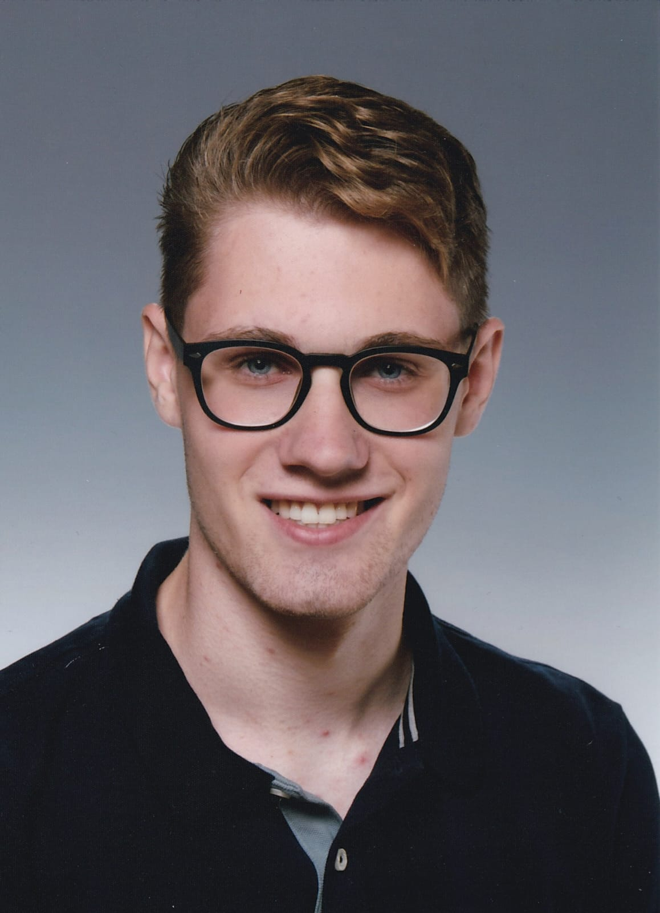
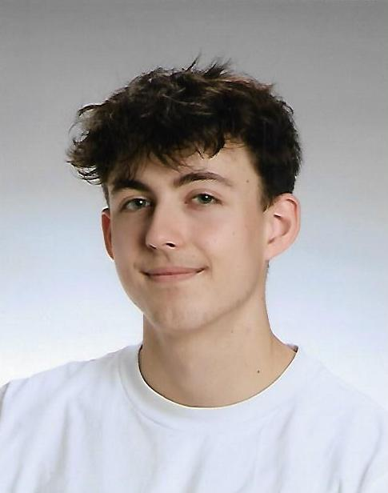
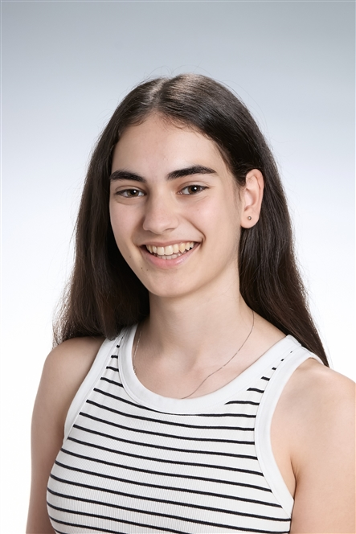
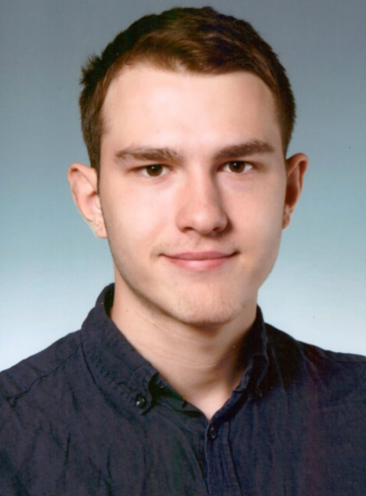
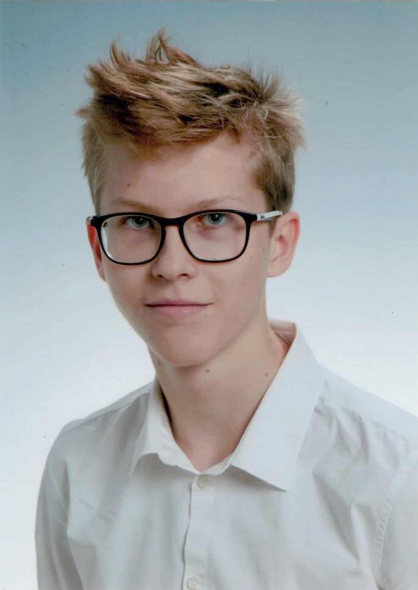

Niklas Spandl
Projektleiter
Hardware inkl. UCS-System, Dokumentation, virtuelle Umgebungen
spandl@xeonis.devUnser Team
In unserem Team kommen Schüler*innen zusammen, welche sich mit unterschiedlichen Bereichen der IT befassen. So ist von Hardware, insbesondere der Betrieb einer Cisco UCS, über automatisiertes Deployment von VMs und dem Einbinden von vorhandenen, open-source Sicherheitstools, vieles dabei.

Projektleiter
Hardware inkl. UCS-System, Dokumentation, virtuelle Umgebungen
spandl@xeonis.dev
Projektleiter Stv.
Virtuelle Infrastruktur, Tests, LLM-Server
kuehberger@xeonis.dev
Projektmitarbeiterin
Security und Automatisierung
hofbauer@xeonis.dev
Projektmitarbeiter
Infrastrukturaufbau mit Rackplan und UCS-Automatisierung
lindermann@xeonis.dev
Projektmitarbeiter
Provisionierung virtueller Topologien
eiboeck@xeonis.dev